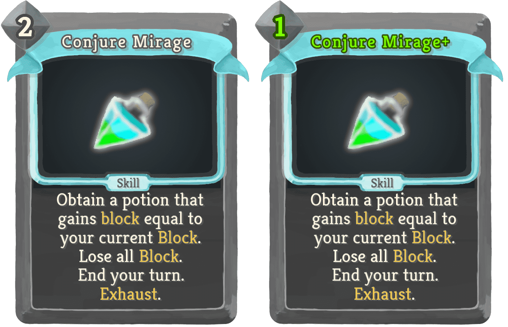
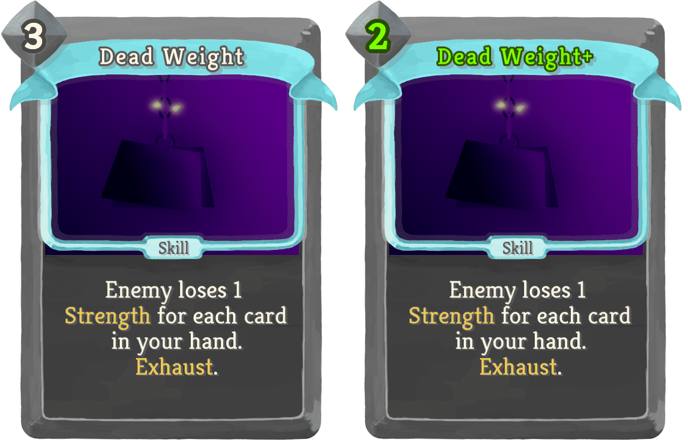
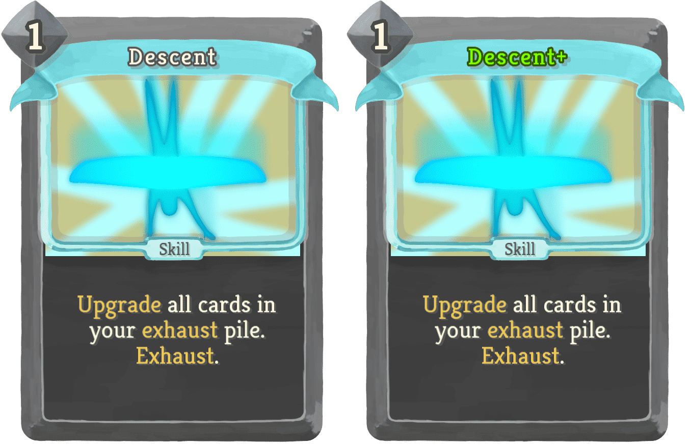
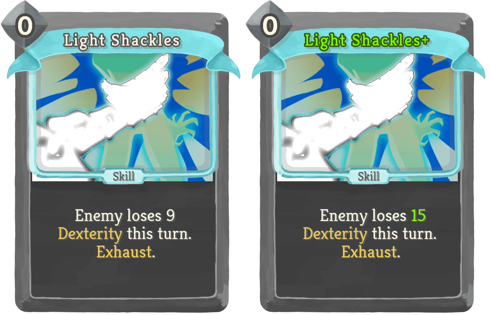
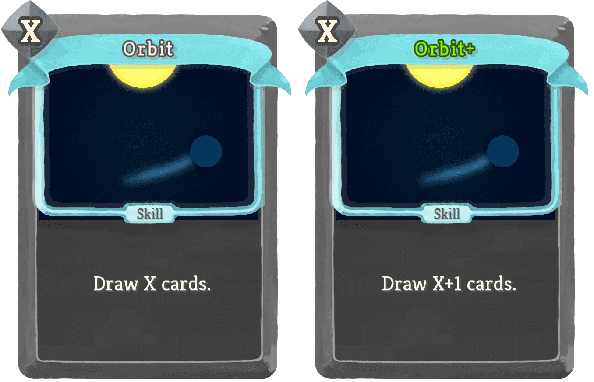
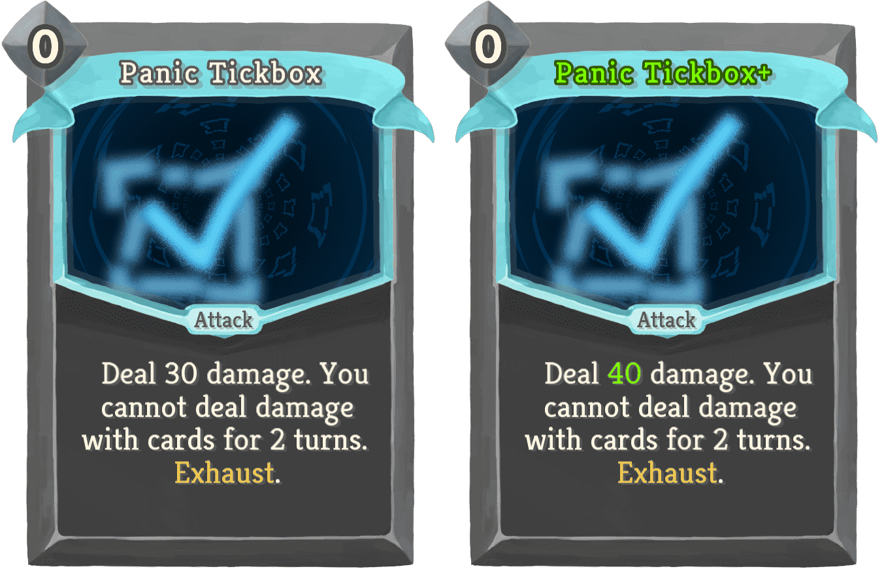
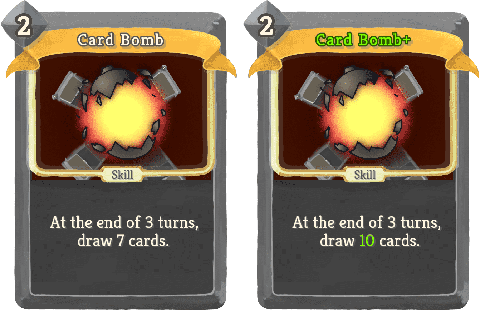
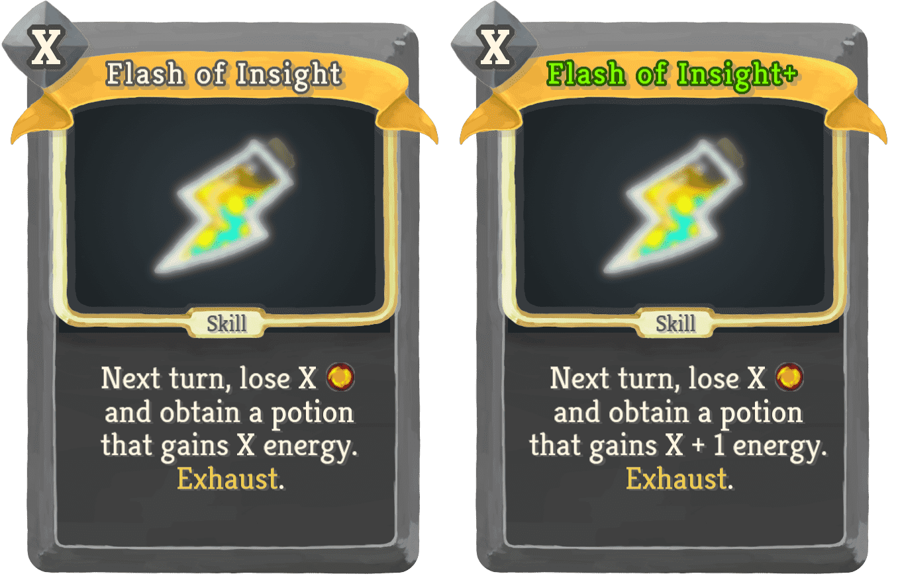
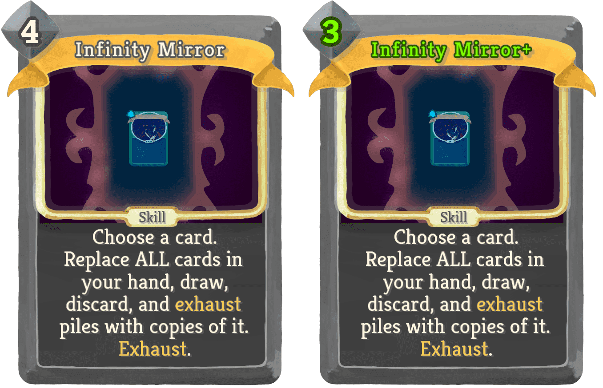

| Name | Image | Rarity | Type | Cost | Description |
|---|
| Hot Potato |  | Special | Skill | 5 (4) | A random creature loses 1 Strength. Repeat until all creatures have the same Strength. Exhaust. |
| Information Paradox |  | Special | Skill | 5 (4) | Replace ALL cards in your hand, draw, discard, exhaust piles, and deck with random cards. Play ALL of them. Exhaust. |
| Ritual Scroll |  | Special | Skill | 0 | Draw 1 cards. If Fatal, permanently increase this card's draw by 1. Exhaust. (not Exhaust.) |
| The Mist |  | Special | Skill | 5 (4) | Play a copy of ALL other colourless cards you played this combat. Exhaust. |
| Acid |  | Uncommon | Skill | 0 | Apply 2 Frail (to ALL enemies). |
| Backthought |  | Uncommon | Skill | 0 | Exhaust a (any number of) card(s). It (They) costs 0 this combat. |
| Banana Peel |  | Uncommon | Skill | 1 | Apply 0 (1) Weak for each Attack in your hand. Apply 0 (1) Vulnerable for each Skill in your hand. |
| Cerebellum Blast |  | Uncommon | Attack | 2 (1) | Innate. Deal damage equal to the number of cards in your exhaust pile. |
| Conjure Mirage |  | Uncommon | Skill | 2 (1) | Obtain a potion that gains block equal to your current Block. Lose all Block. End your turn. Exhaust. |
| Dead Weight |  | Uncommon | Skill | 3 (2) | Enemy loses 1 Strength for each card in your hand. Exhaust. |
| Descent |  | Uncommon | Skill | 1 | Upgrade all cards in your exhaust pile. Exhaust. |
| Disleg |  | Uncommon | Skill | 1 | Enemy loses 2 (3) Dexterity. |
| Gain Momentum |  | Uncommon | Skill | 2 (1) | Discard your hand. Obtain a potion that draws cards equal to the number of cards discarded. Exhaust. |
| Inspiration |  | Uncommon | Skill | 0 | Draw 1.5 cards. Exhaust. (not Exhaust.) |
| Light Shackles |  | Uncommon | Skill | 0 | Enemy loses 9 (15) Dexterity this turn. Exhaust. |
| Optics |  | Uncommon | Skill | 2 | Gain 8 (11) Block. The next colourless card you play costs 0. |
| Orbit |  | Uncommon | Skill | X | Draw X (X+1) cards. |
| Panic Tickbox |  | Uncommon | Attack | 0 | Deal 30 (40) damage. You cannot deal damage with cards for 2 turns. Exhaust. |
| Polarised Lens |  | Uncommon | Skill | 1 | Draw 3 (5) cards. Discard all cards in your hand that are not colourless cards. |
| Queen of All Trades |  | Uncommon | Skill | 0 | Add 1 (2) random card(s) into your hand. Exhaust. |
| Snecko Roll |  | Uncommon | Skill | 0 | Randomise the cost of cards in your hand (twice). |
| Take a Chance |  | Uncommon | Skill | 0 | Permanently remove 1 (2) random card(s) from your deck. Exhaust. |
| Touch of Chaos |  | Uncommon | Skill | X | Play the top X (X+1) cards of your draw pile. |
| Uncertainty |  | Uncommon | Skill | 1 | Shuffle your draw pile 4 (6) times. |
| Card Bomb |  | Rare | Skill | 2 | At the end of 3 turns, draw 7 (10) cards. |
| Cocoon |  | Rare | Skill | 2 | Shuffle 3 (5) random Powers into your draw pile. They cost 0 this combat. Exhaust. |
| Collect |  | Rare | Skill | 1 | Apply 1 (2) Weak. Apply 1 (2) Vulnerable. Apply 1 (2) Frail. Apply 1 (2) Constricted. |
| Debilitate |  | Rare | Skill | 2 | Enemy loses 1 (2) Strength, Dexterity, and Focus. Apply 1 (2) Weak, Vulnerable, Lock-On, and Frail. |
| Die Die |  | Rare | Attack | 1 | Deal 17 (25) damage to all but one enemy. Exhaust. |
| Endospore |  | Rare | Skill | 1 | Innate. Ethereal. Set your max HP to 1. At the end of the combat, gain 4 (6) max HP and permanently remove all copies of this card. |
| Fish Game |  | Rare | Power | 2 (1) | At the start of your turn, permanently add 1 random card to your deck. |
| Flash of Insight |  | Rare | Skill | X | Next turn, lose X [E] and obtain a potion that gains X (+ 1) energy. Exhaust. |
| Gastrulation |  | Rare | Skill | 2 | Shuffle 3 (5) random colourless cards into your draw pile. They cost 0 this combat. Exhaust. |
| Infinity Mirror |  | Rare | Skill | 4 (3) | Choose a card. Replace ALL cards in your hand, draw, discard, and exhaust piles with copies of it. Exhaust. |
| Instant Mayhem |  | Rare | Skill | X | Play X (X+1) random cards. |
| King of All Trades |  | Rare | Skill | 0 | Permanently add 1 (2) random card(s) into your deck. |
| Light |  | Rare | Skill | 0 | Put 3 (4) random colourless cards from your draw pile into your hand. Exhaust. |
| Peace |  | Rare | Skill | 0 | Put 3 (4) random Skills from your draw pile into your hand. Exhaust. |
| Photocopy |  | Rare | Skill | 1 | The next (!M!) colourless card(s) you play this turn is (are) played twice. |
| Renew |  | Rare | Attack | 2 | Permanently remove all cards in your deck. Deal 10 (14) damage for each card removed. Exhaust. |
| Secret Aura |  | Rare | Skill | 0 | Put a Power from your draw pile into your hand. Exhaust. (not Exhaust.) |
| Slots Machine |  | Rare | Power | 2 (1) | At the start of your turn, play 1 random card. |
| Spiker Solution |  | Rare | Skill | 5 (4) | If the enemy has Thorns, set its HP to 0. Exhaust. |
| Spring Water |  | Rare | Skill | 1 | Return 3 (5) random cards from your Exhaust pile into your hand. |
| Name | Image | Tier | Pool | Description | Flavor |
|---|
| Buffer Solution |  | Common | | Whenever you obtain a potion, trigger its effect. | Mimics fire potions by containing flammable liquid. |
| Ceramic Flower |  | Common | | Whenever you add a curse into your deck, gain 25Gold. | Non-Fungible. |
| Holographic Fish |  | Common | | Whenever you add a colourless card into your deck, gain 13Gold. | The memory of the fish from the future still gives you money. |
| Looking Glass |  | Common | | Whenever you play a card, Scry1. | I think I've seen enough of the future to know where this is going. |
| Sleeping Pills |  | Common | | Upon pickup, remove 2random cards from your deck. | What was I doing again? |
| Bottled Bottled Bottle |  | Uncommon | | Upon pickup, give ALL cards in your deck Innate. | Now you have ALL the bottles! |
| Bottled Elixir |  | Rare | | At the start of each combat, you may exhaust any number of cards to gain that much [E] . | The liquid level doesn't raise by a bit when you throw cards into it. |
| Sandpaper |  | Rare | | Start each combat with 4Strength if your deck has no Attacks. | What am I supposed to sharpen exactly? |
| The Prism |  | Boss | | Upon pickup, choose 5 cards from a pool of 6 cards from each colour to add to your deck and obtain PrismaticShard. | Quit blinding me with that. |
| Ancient Scroll |  | Shop | | Upon pickup, add 5colourless cards into your deck. | It's empty. Of course it's empty. |
{kind=link}
{kind=link}
{kind=link}
{kind=link}
{kind=link}
{kind=link}
{kind=link}
{kind=link}
{kind=link}